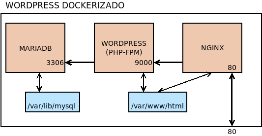

9.5.2.3.4. Ejemplos¶
Dedicaremos este último epígrafe a resolver algunos problemas usando contenedores de Docker.
9.5.2.3.4.1. dnsmasq¶
El propósito es ejecutar un contenedor con dnsmasq capaz de proporcionar resolución de nombres y configuración dinámica de direcciones a los equipos de la red. Esto último nos obliga a que el contenedor comporta la red con el anfitrión.
Aunque no usaremos docker-compose, puesto que sólo necesitamos un contenedor, Debemos preparar un directorio de trabajo con el siguiente contenido:
+ workdir
+-- dnsmasq.d
| +-- dns.conf
| +-- dhcp.conf
+-- Dockerfile
El subdirectorio dnsmasq.d contendrá la configuración que deseamos para
nuestro dnsmasq. Por ejemplo:
# dns.conf
no-resolv
server=1.0.0.1
server=1.1.1.
y:
# dhcp.conf
log-dhcp
dhcp-range=192.168.255.64,192.168.255.127,5m
domain=internal.vm,192.168.255.0/24
Y el Dockerfile la forma en construir una imagen con dnsmasq a partir de Alpine:
FROM alpine
RUN apk update && apk add dnsmasq; \
echo 'conf-dir=/etc/dnsmasq.d/,*.conf' > /etc/dnsmasq.conf
EXPOSE 53/UDP 67/UDP 69/UDP
CMD ["dnsmasq", "--no-daemon", "-z"]
Con ello, podemos construir la imagen:
# docker build -t dnsmasq:alpine .
Y ejecutar el contenedor basado en esa imagen:
# docker run --rm --restart=always --network host -v /workdir/dnsmasq.d:/etc/dnsmasq.d dnsmasq:alpine
Obsérvese un aspecto importante en esta ejecución: la opción --restart que introduce cuál será la política de ejecución del contenedor, esto es, qué es lo que ocurre cuando el contenedor para. Hay cuatro posilibilidades:
Política |
Descripción |
|---|---|
no |
Es el valor por defecto. El contenedor al parar, no reinicia. |
on-failure |
El contenedor sólo se reinicia si la aplicación acaba con un error. |
always |
Reinicia el contenedor siempre, pero si se detiene manualmente (con docker stop), sólo reinicia si se reinicia el demonio o si se reinicia manualmente. |
unless-stopped |
Como el caso anterior, pero no reinicia cuando el demonio se reinicia. |
Tenga presente que el demonio se inicia, cuando el sistema anfitrión arraca. Por tanto, si nuestra política es always, el contenedor arrancará automáticamente, al arrancar el sistema anfitrión. Precisamente ese comportanamiento es el preferible en un contenedor que hemos creado para dar servicio DHCP a la red.
9.5.2.3.4.2. PHP-FPM con socket¶
Planteamos el objetivo de utilizar la imagen de PHP basada en Alpine, pero hacer accesible el servicio de FastCGI a través de un socket UNIX, en vez de un puerto TCP. Para ello tomaremos:
La imagen ya comentada, cuyo contenedor compartirá dos volúmenes:
Uno para albergar el socket.
Otro que contenga la aplicación.
Una segunda imagen de nginx cuyo contenedor compartirá los mismos dos volúmenes anteriores, más un tercero que contenga su configuración modular.
El directorio de trabajo será el siguiente:
+ workdir
+-- docker-compose.yaml
+-- nginx/
| +-- Dockerfile
| +-- conf.d
| +-- php.conf
| +-- default.conf
+-- php-fpm/
| +-- Dockerfile
| +-- etc/
| +-- php-fpm.d/
| | +-- zz-docker.conf
| +-- php/
| +-- conf.d/
| +-- uploads.ini
| +-- [.. otros ficheros ..]
+-- webapp/
+-- [.. ficheros de la aplicación ..]
Preparación de php-fpm
Básicamente, consiste en modificar la configuración de PHP para adaptarla a
nuestras necesidades. Un cambio consiste en sustituir el fichero
zz-docker.conf para lograr la comunicación a través de un
socket. Su contenido es el siguiente:
[global]
daemonize = no
[www]
listen = /var/run/php-fpm/php-fpm.sock
listen.owner = www-data
listen.group = www-data
Además, dentro de etc/php/conf.d, podemos crear ficheros INI que alteren
la configuración general de PHP. Por ejemplo, uno que aumente el tamaño de los
ficheros subidos al servidor:
# conf.d/uploads.ini
post_max_size = 20M
upload_max_filesize = 20M
Por su parte, el fichero Dockerfile, por otra parte, debe ser:
FROM php:fpm${ARGS}-alpine
COPY ./etc /usr/local/etc
VOLUME /var/run/php-fpm
Preparación de nginx
Nuestro problema es que necesitamos que nginx lo ejecute el mismo usuario1 que ejecuta php-fpm en el otro contenedor. php-fpm es ejecutado por el usuario www-data con UID 82 y cuyo grupo principal tiene un GID y nombre idénticos. nginx, en cambio, lo ejecuta el usuario nginx con un UID que no es 82. Solucionaremos el inconveniente creando en este contenedor el usuario www-data con UID 82 y haciendo que ejecute el servidor web.
Los ficheros de configuración del servidor son:
# conf.d/php.conf
upstream php {
server unix:/var/run/php-fpm/php-fpm.sock;
}
y:
# conf.d/default.conf
server {
listen 80;
try_files $uri $uri/ =404;
index index.php;
root /srv/www;
location ~ \.php$ {
fastcgi_split_path_info ^(.+\.php)(/.+)$;
include fastcgi.conf;
fastcgi_param PATH_INFO $fastcgi_path_info;
fastcgi_pass php;
}
}
y el Dockerfile:
FROM nginx:alpine
RUN adduser -Du82 -G www-data www-data; \
sed -ri '/^user/s:nginx:www-data:' /etc/nginx/nginx.conf
docker-compose
Por último, el fichero para docker-compose que levante estos dos contenedores puede ser el siguiente:
version: "3"
services:
php:
image: php:fpm-alpine-socket
build: ./php-fpm
volumes:
- socket:/var/run/php-fpm/
- ./webapp:/srv/www
restart: always
nginx:
image: nginx:alpine-app
build: ./nginx
ports:
- "80:80"
depends_on:
- php
volumes:
- socket:/var/run/php-fpm/
- ./webapp:/srv/www
- ./nginx/conf.d:/etc/nginx/conf.d
restart: always
volumes:
socket:
Aplicación
En el directorio webapp debe colocarse la aplicación de deseemos
ejecutar. Dado que únicamente queremos hacer una prueba nos basta con:
# echo '<?php phpinfo(); ?>' > webapp/index.php
9.5.2.3.4.3. Wordpress¶
Nuestra intención ahora es instalar un Wordpress, para lo cual utilizaremos la siguiente infraestructura:
es decir, tres contenedores diferentes cada uno de los cuales levanta los tres servicios en que se puede descomponer la aplicación: la base de datos, la aplicación PHP (con el intérprete incluido) y un servidor web que sea el que ofrezca la aplicación. Además, es necesario almacenar los ficheros de la base de la datos y los datos de la aplicación, por lo que se requerirán dos volúmenes de datos.
Nota
En este caso, y a diferencia del anterior ejercicio, la aplicación y PHP se encuentran en el mismo contenedor y, además, no se expone mediante socket, sino mediante TCP. No es muy complicado adaptar esta solución utilizando las estrategias del ejercicio anterior.
Los tres contenedores que utilizaremos son:
La imagen oficial de mariaDB, que se caracteriza porque al generar un contenedor, crea los ficheros necesarios del gestor de bases de datos, según los valores de las variables de entorno que se proporcionen (véase el
docker-compose.yamlmás adelante). Esta característica nos permite preparar la base de datos para wordpress y el usuario que la maneje.Una imagen oficial de wordpress que incluya PHP-FPM. Esta imagen contiene el PHP necesario y la versión de Wordpress en el momento de su generación, la cual acaba dejando disponible en
/var/www/html.Esta imagen también usa variables de entorno para conocer dónde se encuentra la base de datos y con qué usuarios acceder a ella.
Una imagen mínima de nginx que necesitará acceso al directorio
/var/www/htmldel contenedor anterior y alterar su configuración predefinida para ser capaz de servir la aplicación.
Dado que actúan en comandita tres contenedores, lo más juicioso es utilizar
docker-compose, el cual requerirá el siguiente
docker-compose,yaml:
version: "3"
services:
mysql:
image: mariadb
volumes:
- wpmysql:/var/lib/mysql
environment:
MYSQL_ROOT_PASSWORD: ${ROOT_PASS:-toor}
MYSQL_DATABASE: ${WP_DB:-wordpress}
MYSQL_USER: ${WP_USER:-wp}
MYSQL_PASSWORD: ${WP_PASS:-wp}
restart: always
wordpress:
image: wordpress:php7.4-fpm-alpine
depends_on:
- mysql
volumes:
- wpapp:/var/www/html
environment:
WORDPRESS_DB_HOST: mysql
MYSQL_ROOT_PASSWORD: ${ROOT_PASS:-toor}
WORDPRESS_DB_NAME: ${WP_DB:-wordpress}
WORDPRESS_DB_USER: ${WP_USER:-wp}
WORDPRESS_DB_PASSWORD: ${WP_PASS:-wp}
WORDPRESS_TABLE_PREFIX: ${WP_PREFIX:-wp_}
restart: always
nginx:
image: nginx:alpine
ports:
- "80:80"
volumes:
- ./blogs.conf:/etc/nginx/conf.d/default.conf
- wpapp:/var/www/html
depends_on:
- wordpress
restart: always
volumes:
wpmysql:
wpapp:
Si se observa el fichero, se verá que es necesario suministrar el fichero
blogs.conf con la configuración para que nginx sea capaz
de ejecutar la aplicación:
+ workdir
+-- blogs.conf
+-- docker-compose.yaml
Su contenido puede ser este:
server {
listen 80;
root /var/www/html;
index index.php;
location / {
try_files $uri $uri/ /index.php$is_args$args;
}
location ~ \.php$ {
fastcgi_split_path_info ^(.+\.php)(/.+)$;
fastcgi_pass wordpress:9000;
fastcgi_index index.php;
include fastcgi.conf;
fastcgi_param SCRIPT_FILENAME $document_root$fastcgi_script_name;
fastcgi_param SCRIPT_NAME $fastcgi_script_name;
}
}
Notas al pie
- 1
En realidad, un usuario con el mismo UID.